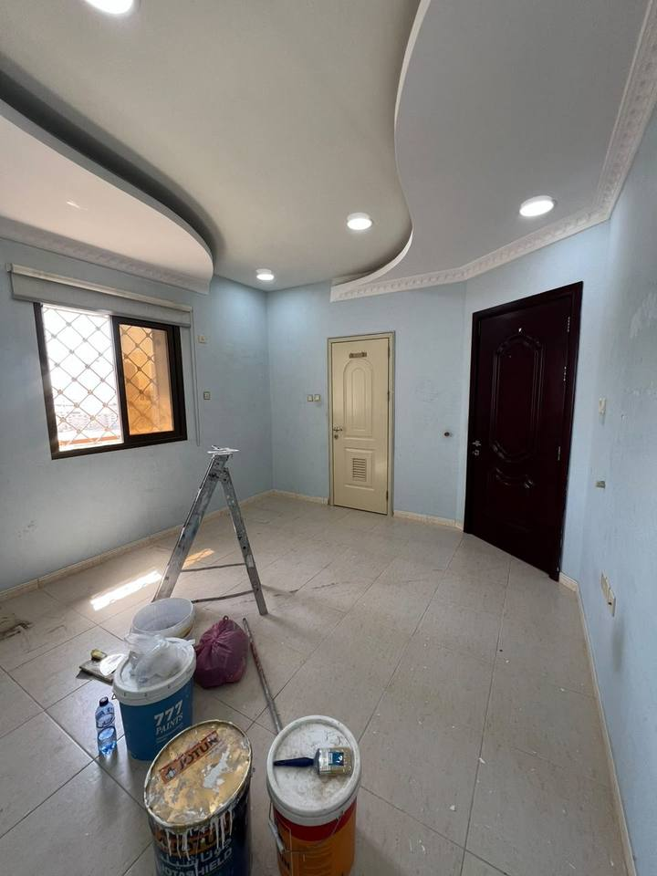

أسعار الدهانات والترميم والتشطيب في الشرقية — دليل 2026 التقديري
أكثر ما يميز منافسينا الأقوياء أنهم ينشرون أسعارهم — ونحن نفعل ذلك أيضًا. الجدول التالي متوسطات تقديرية منشورة في سوق المنطقة الشرقية، لمساعدتك على التخطيط قبل طلب المعاينة المجانية.

جدول الأسعار التقديرية
جميع الأرقام تقديرية وقابلة للتغيّر حسب حالة الجدار أو السطح، نوع المادة، وعدد الأوجه والطبقات. السعر النهائي دائمًا بعد المعاينة المجانية وبعرض مكتوب.
| البند | النطاق التقديري | ملاحظات |
|---|---|---|
| دهان داخلي على لياسة جديدة (شامل المواد) | 12 – 25 ريال / م² | حسب نوع الدهان وعدد الأوجه |
| إعادة دهان مع كشط ومعالجة (شامل المواد) | 18 – 35 ريال / م² | حسب حجم التقشر والرطوبة |
| دهان داخلي سادة (شامل المواد) | 12 – 18 ريال / م² | درجات اقتصادية إلى متوسطة |
| بروفايل واجهات خارجية (شامل المواد) | 25 – 40 ريال / م² | حسب ارتفاع الواجهة والتجهيز |
| دهان باب خشبي (تجهيز + دهان) | 200 – 350 ريال / باب | حسب حالة الباب ونوع الدهان |
| أرضيات إيبوكسي (شامل المواد) | 30 – 55 ريال / م² | للمستودعات والمواقف والصناعي |
| ترميم عام للمنازل والفلل | 250 – 450 ريال / م² | حسب الحالة ونطاق الأعمال |
| تشطيب داخلي فاخر | 500 – 900 ريال / م² | رخام وبورسلان وديكورات كاملة |
| تشطيب فيلا 400 م² (مثال إجمالي) | 75,000 – 105,000 ريال | من الاقتصادي إلى المتوسط |
ما الذي يحرّك السعر فعليًا؟
- حالة السطح: جدار جديد غير جدار متقشر يحتاج كشطًا ومعالجة رطوبة وملوحة.
- نوع المادة: جوتن فينوماستيك غير الدرجات الاقتصادية، والشيبورد الألماني 18 ملم غير الألواح الخفيفة.
- عدد الطبقات: معجون سافيتو 3 طبقات ودهان وجهين يختلف عن وجه واحد سريع.
- الارتفاع والوصول: واجهات عالية تحتاج سقالات وتجهيزات سلامة.
- الضمان: العمل المضمون كتابةً يُسعَّر بمسؤولية أعلى — ويوفّر عليك إعادة التنفيذ لاحقًا.
وماذا عن المظلات والسواتر؟
لا ينشر أي مقاول في السوق تقريبًا نطاقًا ثابتًا لأسعار المظلات، لأن السعر يعتمد على المقاس ونوع القماش والهيكل. ما نلتزم به: قماش PVC كوري 1100 جرام، هيكل مجلفن، وسعر مكتوب بعد معاينة مجانية — وضمان 10 سنوات بينما المعتاد في السوق 3–5 سنوات.
تفاصيل كل خدمة
المراحل والمواد والمشاريع الحقيقية: الدهانات · الشيبورد وبديل الخشب · الترميم والتشطيب · الجبس وورق الجدران · المظلات والسواتر — أو تصفّحها منفّذة في معرض الأعمال.
الأسئلة الشائعة
هل هذه أسعاركم النهائية؟
لا — هذه متوسطات تقديرية منشورة في سوق المنطقة الشرقية لمساعدتك على التخطيط. سعرك النهائي يُحدَّد بعد المعاينة المجانية ويُسلَّم لك مكتوبًا ومفصّلًا بالمواد والبنود قبل بدء أي عمل.
لماذا تختلف الأسعار بين مقاول وآخر لنفس العمل؟
بسبب ثلاثة عوامل: نوع المواد (أصلية مُسمّاة أم بدائل)، جودة التجهيز (كشط ومعالجة كاملة أم دهان فوق القديم)، ووجود ضمان مكتوب من عدمه. المقارنة العادلة تكون بنفس المواصفات.
هل تُحسب الأسعار بالمتر أم بالمقاولة؟
الدهانات والتشطيبات القياسية بالمتر المربع، والأعمال الخاصة مثل الأبواب والديكورات بالمقطوعية — ويُوضَّح أسلوب الحساب في عرض السعر.
احسب تكلفة مشروعك وأرسلها واتساب
اختر الخدمة والمدينة وأضف تفاصيل بسيطة — سيُفتح طلبك في واتساب جاهزًا للإرسال. السعر النهائي يُؤكَّد بعد المعاينة المجانية.